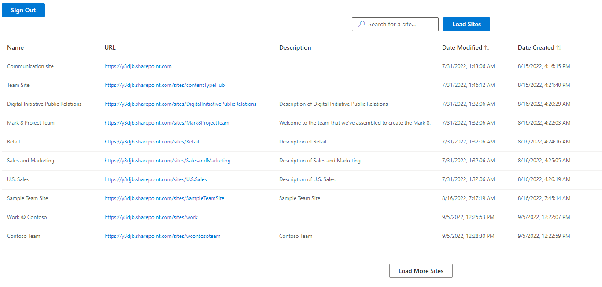

<div id="ajax-page" class="ajax-page-content">
    <div class="ajax-page-wrapper">
        <div class="ajax-page-nav">
            <div class="nav-item ajax-page-prev-next">
                <!-- <a class="ajax-page-load" href="goddamnhell.html"><i class="lnr lnr-chevron-left"></i></a> -->
                <!-- <a class="ajax-page-load" href="lurkersinthenightlight.html"><i class="lnr lnr-chevron-right"></i></a> -->
            </div>
            <div class="nav-item ajax-page-close-button">
                <a id="ajax-page-close-button" href="#"><i class="lnr lnr-cross"></i></a>
            </div>
        </div>

        <div class="ajax-page-title">
            <h1>CloudScraper</h1>
        </div>

        <div class="row">
            <div class="col-sm-12 col-md-12 portfolio-block">
                <!-- Project Description -->
                <div class="project-description" style="margin-left: 0px; margin-bottom: 30px;">
                    <div class="block-title">
                        <h3>Description</h3>
                    </div>
    
                    <p>I developed this application during my practical semester at <a href="http://cloudwerk.com" target="_blank">CloudWerk GmbH</a> in my 5th semester.
                    </p>
                    <p>
                        This application was primarily developed for Microsoft SharePoint and Microsoft Teams. It lists all SharePoint sites the currently logged-in user has access to. Additionally, the user can search for a specific site or sort after 'Date Modified' or 'Date Created'. Using this app avoids time spent navigating through multiple SharePoint sites to get to the wanted site.
                    </p>
                    <p>
                        This app was developed entirely with ReactJS and FluentUI. I did everything from planning up to developing all by myself.
                    </p>
                    <!-- /Project Description -->
                </div>
                <!-- Project Description -->
            </div>
        </div>


        <div class="row">
            <div class="col-sm-12 col-md-12 portfolio-block">
                <div class="owl-carousel portfolio-page-carousel">
                    <div class="item">
                        
                    </div>
                </div>

                <script type="text/javascript">
                    jQuery(document).ready(function($){
                        $('.portfolio-page-carousel').imagesLoaded(function(){
                            $('.portfolio-page-carousel').owlCarousel({
                                smartSpeed:1200,
                                items: 1,
                                loop: true,
                                dots: true,
                                nav: true,
                                navText: false,
                                margin: 10,
                                autoHeight:true
                            });
                        });
                    });
                </script>
            </div>
            </div>
        </div>
    </div>
</div>